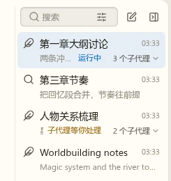
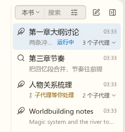

t20 第 6 轮：会话列表的搜索行
会话列表顶上那一行（搜索、作品范围、过滤、新建）改成哪种？
推荐 A：一行只剩搜索框和两个图标；“当前作品／全部作品”很少切，收进过滤菜单（菜单按钮上带已选条件数），窄到 220 也不挤。B 多占一行，窄时“当前作品”被截断；C 的“本书”前缀把搜索框切成两截。
现在
A 范围收进过滤菜单
窄（约 220）

过滤菜单：上面一组单选“当前作品／全部作品”，下面是原来的过滤项
B 范围单独一行
窄（约 220）
C 范围做搜索框前缀
窄（约 220）

直接修，不用答
| 哪里 | 改成什么 |
|---|---|
| 未读数 | 中性深色小胶囊，不用强调色（强调色只给当前项）；有等你处理时用 warning 色 |
| 搜索框的提示文字 | 只写“搜索” |
已定
- 浮动窗展开着拖动不再变小；一列按钮对齐到同一条中线；轨宽手柄亮起时是细线（已修并合入）
- 归位后再浮动用上次的位置与大小（已做并合入）
- 收着时窄列（侧柜）保留；展开时底下三个按钮落到列表底部成横排导航（第 2 轮附言）
- 结构按第 3 轮：收着窄列照旧，展开后窄列让位、列表底部是 Bot｜会话；展开收起按钮换个位置（第 3 轮附言，本轮第一题）
- 右栏有别的容器时，展开的列表顶上一行入口；只有消息时不加（第 3 轮）
- 列表回到 t03 第 5 轮定下的稿；第 3、4 轮的三个方向与第 1 轮的首字方块作废（第 4 轮后会话里）
- 列表照 t03 稿、底部导航、不要顶上页签，缺省宽 300（第 5 轮）
- 展开收起按钮按 B：收着在窄列顶上，展开在搜索行右端（第 5 轮）